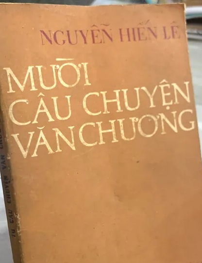

« Back
Mười Câu Chuyện Văn Chương
By Nguyễn Hiến Lê

Vài Lời Thưa Trước
BỐN LỐI KẾT TRONG TIỂU THUYẾT BỐN NHÂN SINH QUAN
NỬA THẾ KỈ CHÁNH TẢ VIỆT NGỮ
TRÊN MƯỜI NĂM CẦM BÚT VÀ XUẤT BẢN
THÂN PHẬN CON NGƯỜI TRONG TRUYỆN KIỀU
CÁCH DÙNG TIẾNG “ĐÂU” TRONG TRUYỆN KIỀU
“HỒN ĐẠI VIỆT, GIỌNG HÀN THUYÊN”
ĐẤT HÀ TIÊN VỚI HỌ MẠC VÀ HỌ LÂM
“VĂN CHƯƠNG HẠ GIỚI”
HÔN NHÂN VÀ NGHỀ CẦM VIẾT
KỈ NGUYÊN TIÊU THỤ VÀ NGHỀ VIẾT VĂN
SÁCH CỦA NGUYỄN HIẾN LÊ